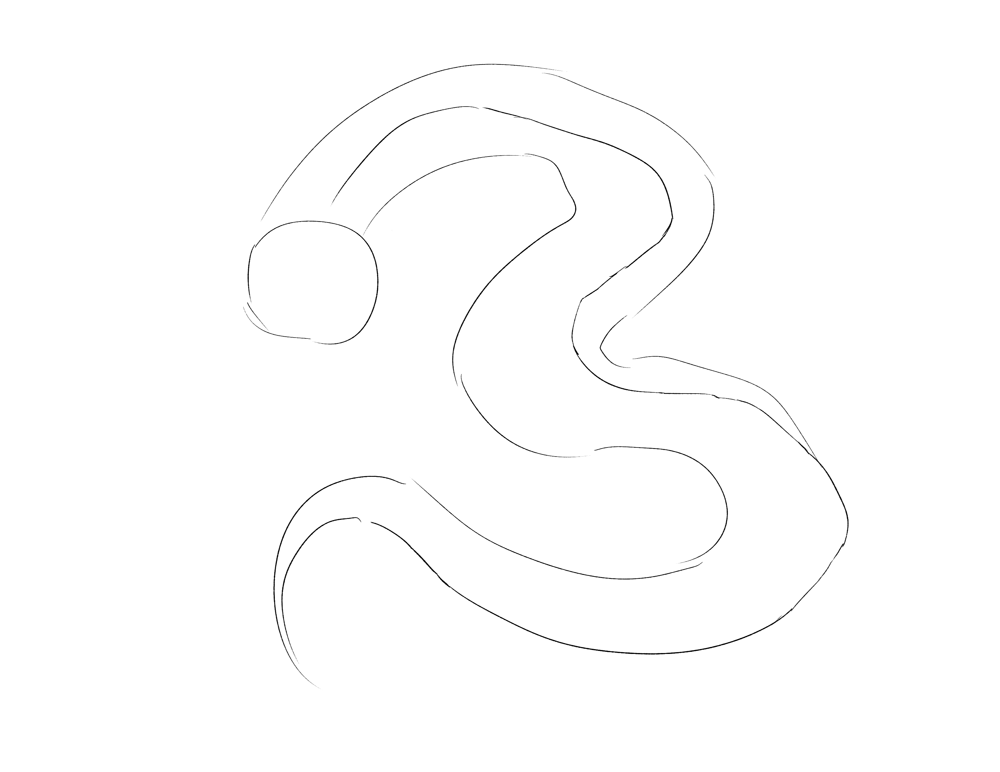
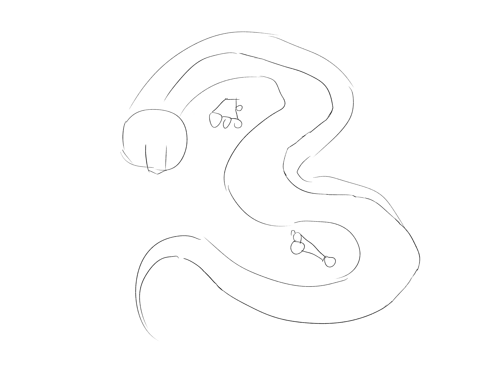
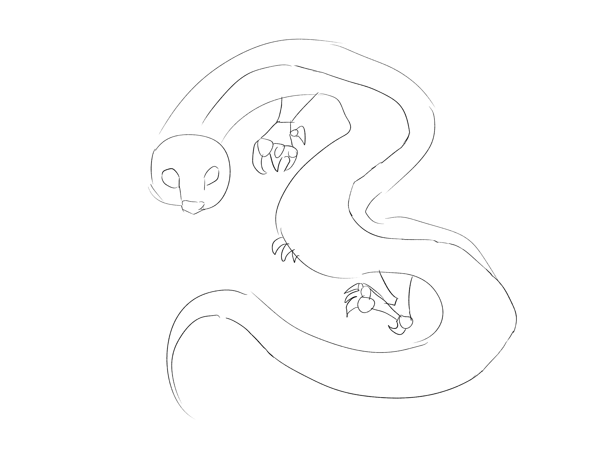
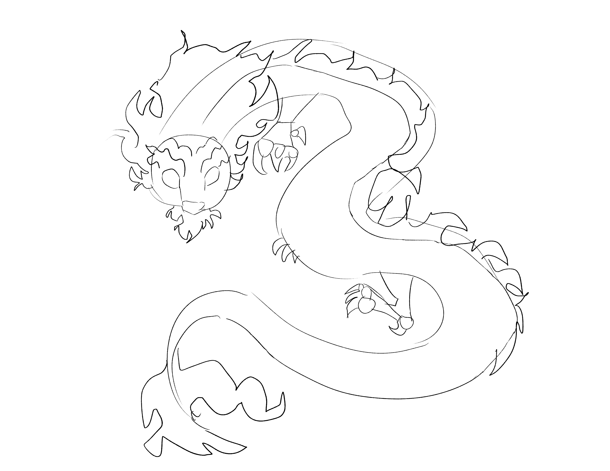
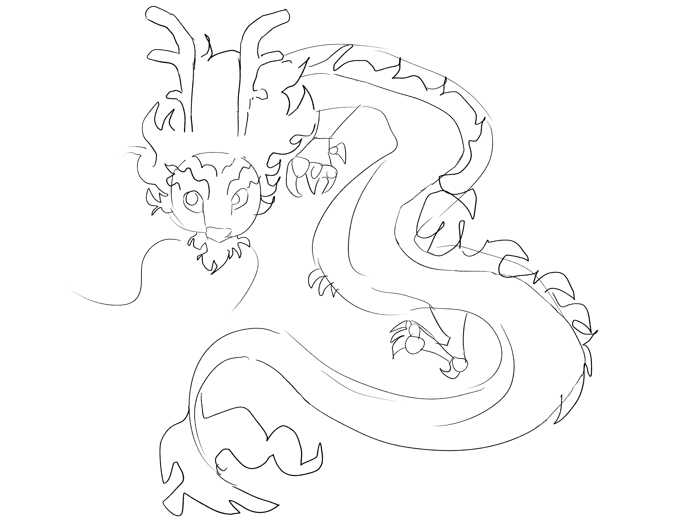
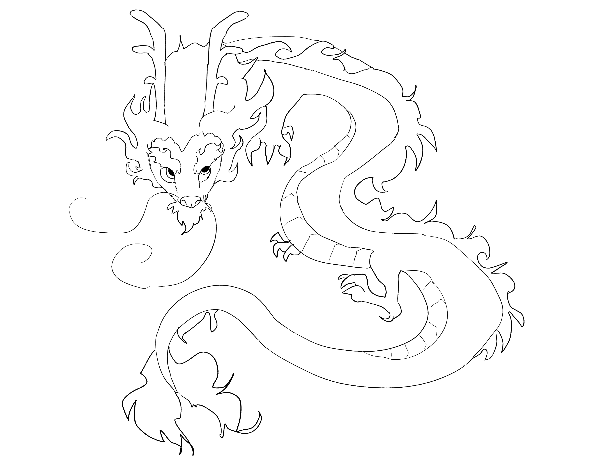
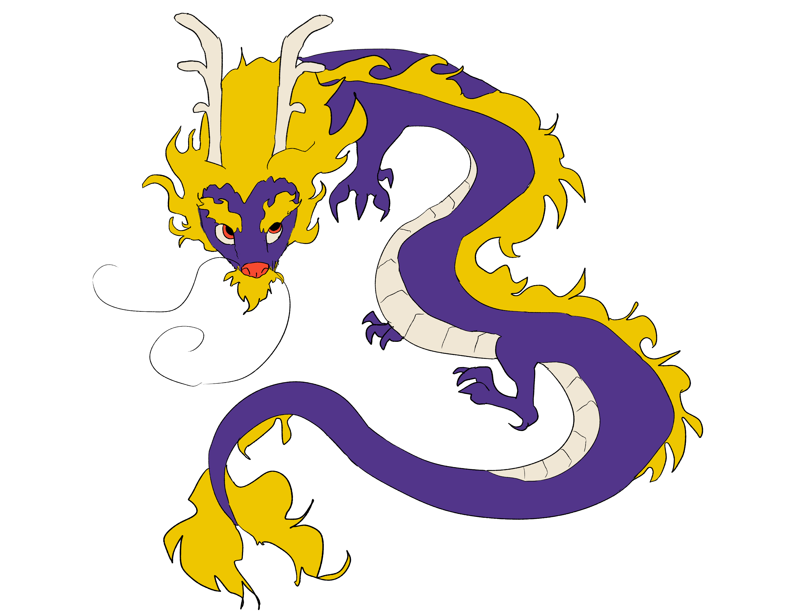

In order to establish the dragon's pose, draw a circle for a head and a line for the spine. Since lung dragons are serpentine, the line can be long and curvy.
Step 2

If you're having trouble, reference a photograph of a snake in your intended pose.
Next, add parallel lines above and below the spine which give the impression of a 3D body. Taper these lines to the spine at the end of the tail and connect them to the head.
Step 3

The pentagon/circle method is used in drawing human hands as well.
Draw a long trapezoid and leave one side open to structure the dragon's snout. Then, add pentagons with four circles to begin the feet. The circles are where the claws will be added.
Step 4

The feet of a lung dragon take inspiration from an eagle's talons.
Extend the snout into ovular shapes to give the dragon eyes, and give it a dog's nose. Draw curvy triangles extending from the circles on the feet, and connect the feet to the body.
Step 5

The fur can be created by drawing ocean waves around the intended shape and connecting them.
Add the dragon's fur: lung dragons often have beard or mustache-like fur around their mouths, long eyebrows, a mane, and a strip of hair following the spine line we drew earlier. Some have fur on the tip of their tail, too.
Step 6

Lung dragons typically have round irises and pupils, like humans.
Begin to add details like antlers, whiskers, and irises. Start to erase lines that are leftover from overlapping shapes.
Step 7

There are extra lines added from the edges of the circle tapering toward the end of the first line.
Clean up your sketch!

Lung dragons will often use gold as an accent color. For a main color, bright reds and blues are commonly used.